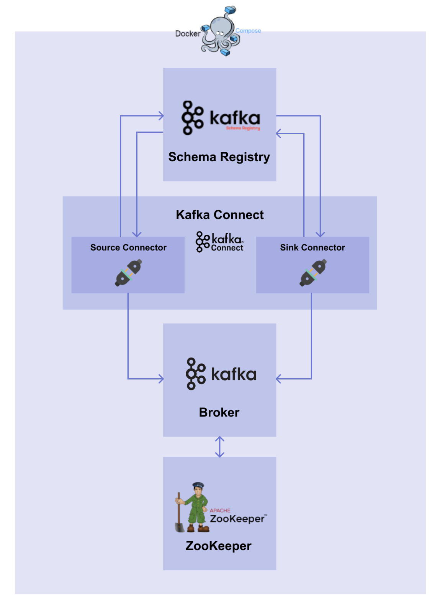

MLOps for MLE - 18
mlops
Zookeeper, Broker, Schema Registry, Connect 생성
Summary
- Docker Compose 를 활용하여 Zookeeper, Broker, Schema Registry, Connect 를 생성함
Note
실습을 진행했던 코드를 보고싶으시다면 여기를 눌러주세요
실습
1. Review
- Zookeeper : 브로커 서버의 상태 감지를 위해 사용되는 주키퍼 서버
- Broker : Source Connector 에서 데이터를 받아 토픽에 저장하고, Sink Connector 로 데이터를 넘겨줄 브로커 서버
- Schema Registry : 메시지의 schema 를 저장하기 위한 Schema Registry 서버
- Connect : Connector 를 띄우기 위한 Connect 서버
이번 실습에서 진행될 전체적인 요약도

2. Kafka System
2.1 Zookeeper & Broker
MLOps-day16에 작성했던 docker.yaml 파일을 사용
2.2 Schema Registry
version: "3"
services:
schema-registry:
image: confluentinc/cp-schema-registry:7.3.0
container_name: schema-registry
depends_on:
- broker
ports:
- 8081:8081
environment:
SCHEMA_REGISTRY_HOST_NAME: schema-registry
SCHEMA_REGISTRY_KAFKASTORE_BOOTSTRAP_SERVERS: broker:29092
SCHEMA_REGISTRY_LISTENERS: http://schema-registry:8081- image : Schema Registry 의 이미지로 해당 기입된 이미지 사용
- depends_on :
broker가 먼저 실행된 후 Schema Registry 가 실행되어야 함 - ports : Schema Registry 의 포트인
8081:8081을 사용 - SCHEMA_REGISTRY_HOST_NAME : Schema Registry 의 호스트 이름
- SCHEMA_REGISTRY_KAFKASTORE_BOOTSTRAP_SERVERS : Bootstrap 으로 띄워진 브로커 서버 지정 / 일반적으로
브로커 서비스 이름 : 브로커 서비스 내부 포트로 사용 - SCHEMA_REGISTRY_LISTENERS : 외부에서 접속할 리스너를 설정
2.3 Connect
Connect 의 경우 이미지를 build 하기 위한 Dockerfile 이 필요
FROM confluentinc/cp-kafka-connect:7.3.0
ENV CONNECT_PLUGIN_PATH="/usr/share/java,/usr/share/confluent-hub-components"
RUN confluent-hub install --no-prompt snowflakeinc/snowflake-kafka-connector:1.5.5 &&\
confluent-hub install --no-prompt confluentinc/kafka-connect-jdbc:10.2.2 &&\
confluent-hub install --no-prompt confluentinc/kafka-connect-json-schema-converter:7.3.0- ENV : Connect 에서는 플러그인의 path 를 설정
- RUN : JDBC Connect 를 사용하고, PostgreSQL DB 에 접근이 가능한 Connector 를 설치해야 함 / value schema 의 Converter 는 Json Schema Converter 를 사용
위에서 작성한 Dockerfile 을 이용해서 docker compose 파일은 아래와 같음
version: "3"
services:
connect:
build:
context: .
dockerfile: connect.Dockerfile
container_name: connect
depends_on:
- broker
- schema-registry
ports:
- 8083:8083
environment:
CONNECT_BOOTSTRAP_SERVERS: broker:29092
CONNECT_REST_ADVERTISED_HOST_NAME: connect
CONNECT_GROUP_ID: docker-connect-group
CONNECT_CONFIG_STORAGE_TOPIC: docker-connect-configs
CONNECT_CONFIG_STORAGE_REPLICATION_FACTOR: 1
CONNECT_OFFSET_STORAGE_TOPIC: docker-connect-offsets
CONNECT_OFFSET_STORAGE_REPLICATION_FACTOR: 1
CONNECT_STATUS_STORAGE_TOPIC: docker-connect-status
CONNECT_STATUS_STORAGE_REPLICATION_FACTOR: 1
CONNECT_KEY_CONVERTER: org.apache.kafka.connect.storage.StringConverter
CONNECT_VALUE_CONVERTER: org.apache.kafka.connect.json.JsonConverter
CONNECT_VALUE_CONVERTER_SCHEMA_REGISTRY_URL: http://schema-registry:8081- ports : Connect 의 포트인
8083:8083을 포트 포워딩 - CONNECT_BOOTSTRAP_SERVERS : Bootstrap 으로 띄워진 브로커 서버 지정 / 일반적으로
브로커 서비스 이름 : 브로커 서비스 내부 포트사용 - CONNECT_REST_ADVERTISED_HOST_NAME : Connect 에서는 REST API 요청에 대한 처리와 Connector 의 등록, 설정, 시작, 종료 등의 처리를 담당하는 Worker 가 존재하고 Worker 간의 연결이 가능하도록 이름을 지정
- CONNECT_GROUP_ID : Connect 의 Worker 프로세스 그룹을 구성하는데 사용하는 고유한 ID 지정 (Consumer 그룹 ID 와 출동하면 안됨)
- CONNECT_CONFIG_STORAGE_TOPIC : Connector 의 환경 설정을 저장할 브로커의 토픽 이름 설정
- CONNECT_CONFIG_STORAGE_REPLICATION_FACTOR : 환경 설정을 저장하는 토픽을 생성할 때 사용할 Replication Factor 의 수를 설정
- CONNECT_OFFSET_STORAGE_TOPIC : Connector 의 offset 을 저장할 브로커의 토픽 이름을 설정
- CONNECT_OFFSET_STORAGE_REPLICATION_FACTOR : offset 을 저장하는 토픽을 생성할 때 사용할 Replication Factor 의 수를 설정
- CONNECT_STATUS_STORAGE_TOPIC : Connector 와 task 의 상태를 저장할 브로커의 토픽 이름을 설정
- CONNECT_STATUS_STORAGE_REPLICATION_FACTOR : 상태를 저장하는 토픽을 생성할 때 사용할 Replication Factor 의 수를 설정
- CONNECT_KEY_CONVERTER : Key 에 대한 Converter 를 설정
- CONNECT_VALUE_CONVERTER : Value 에 대한 Converter 를 설정
- CONNECT_VALUE_CONVERTER_SCHEMA_REGISTRY_URL : Value Converter 에 대한 Schema Registry URL 설정
3. 전체적인 docker compose yaml 코드
zookeeper, schema registry, connector 를 합친 파일은 아래와 같음
# kafka-docker-compose.yaml
version: "3"
services:
zookeeper:
image: confluentinc/cp-zookeeper:7.3.0
container_name: zookeeper
ports:
- 2181:2181
environment:
ZOOKEEPER_SERVER_ID: 1
ZOOKEEPER_CLIENT_PORT: 2181
broker:
image: confluentinc/cp-kafka:7.3.0
container_name: broker
depends_on:
- zookeeper
ports:
- 9092:9092
environment:
KAFKA_BROKER_ID: 1
KAFKA_ZOOKEEPER_CONNECT: zookeeper:2181
KAFKA_ADVERTISED_LISTENERS: PLAINTEXT://broker:29092,PLAINTEXT_HOST://localhost:9092
KAFKA_LISTENER_SECURITY_PROTOCOL_MAP: PLAINTEXT:PLAINTEXT,PLAINTEXT_HOST:PLAINTEXT
KAFKA_INTER_BROKER_LISTENER_NAME: PLAINTEXT
KAFKA_OFFSETS_TOPIC_REPLICATION_FACTOR: 1
KAFKA_GROUP_INITIAL_REBALANCE_DELAY_MS: 0
schema-registry:
image: confluentinc/cp-schema-registry:7.3.0
container_name: schema-registry
depends_on:
- broker
ports:
- 8081:8081
environment:
SCHEMA_REGISTRY_HOST_NAME: schema-registry
SCHEMA_REGISTRY_KAFKASTORE_BOOTSTRAP_SERVERS: broker:29092
SCHEMA_REGISTRY_LISTENERS: http://schema-registry:8081
connect:
build:
context: .
dockerfile: connect.Dockerfile
container_name: connect
depends_on:
- broker
- schema-registry
ports:
- 8083:8083
environment:
CONNECT_BOOTSTRAP_SERVERS: broker:29092
CONNECT_REST_ADVERTISED_HOST_NAME: connect
CONNECT_GROUP_ID: docker-connect-group
CONNECT_CONFIG_STORAGE_TOPIC: docker-connect-configs
CONNECT_CONFIG_STORAGE_REPLICATION_FACTOR: 1
CONNECT_OFFSET_STORAGE_TOPIC: docker-connect-offsets
CONNECT_OFFSET_STORAGE_REPLICATION_FACTOR: 1
CONNECT_STATUS_STORAGE_TOPIC: docker-connect-status
CONNECT_STATUS_STORAGE_REPLICATION_FACTOR: 1
CONNECT_KEY_CONVERTER: org.apache.kafka.connect.storage.StringConverter
CONNECT_VALUE_CONVERTER: org.apache.kafka.connect.json.JsonConverter
CONNECT_VALUE_CONVERTER_SCHEMA_REGISTRY_URL: http://schema-registry:8081
networks:
default:
name: mlops-network
external: true